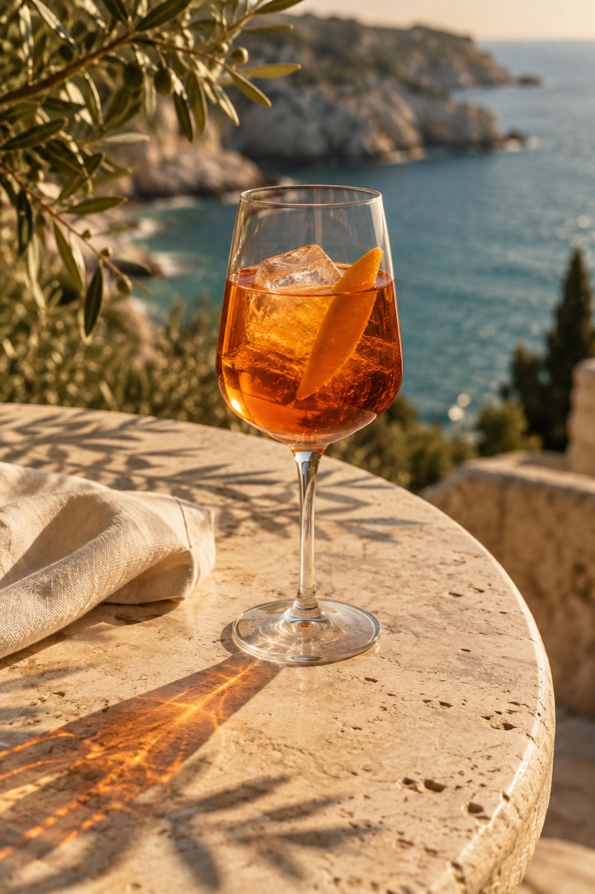

Перейти к содержимому
MAREA / МЕНЮLA CARTA · 28 ВКУСОВ ПОБЕРЕЖЬЯМоре.
Сад.
Ваш стол.
Свежий улов, паста ручной работы и аперитив, который продлевает закат.
Выбрать свой вкус  LINGUINE · FATTO CON AMORE
LINGUINE · FATTO CON AMORE

L’ORA DELL’APERITIVOХорошее начало.
И продолжение.
Спритц со льдом, лимон с базиликом или бокал игристого. За вашим столом каждому найдётся своё настроение.
Как провести вечер